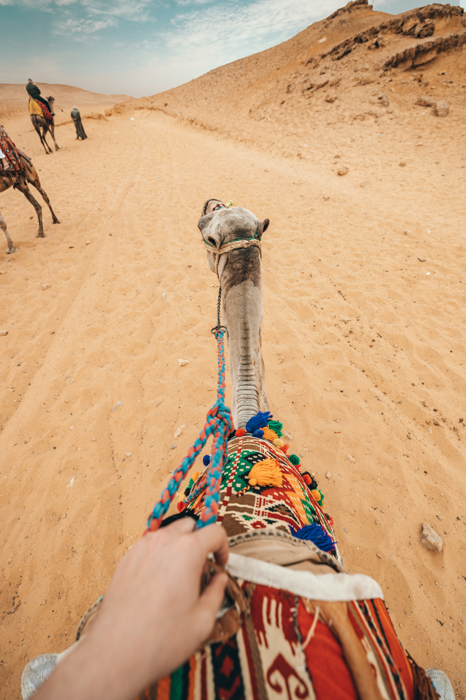

Despite ranking in the top 30 largest countries with its 1 million square kilometers of land, Egypt is a country that is notorious for its geographic ‘distribution.’ 99% of Egypt’s population utilizes only 5% of the total land area but nearly 100% of its aquatic resources as a result of the predominantly barren ecosystem. The lifeline of some 90 million human beings, the river Nile is the focal point of urban planning, an incredible 6,695 km gift of sustenance for Egypt and three other countries, making it the longest, and arguably most vital, river in the world.

The Nile enters Egypt a few kilometers north of a Sudanese town called Wadi Halfa through a narrow canyon that traverses sandstone and granite cliffs. The northward flowing direction of the river has thus earned Egypt’s southern border the name “Upper Egypt.” Within this stretch of the Nile is the world’s most intensive concentration of temples, tombs and palaces constructed over the span of 4,000 years. This includes the temples of Abydos, Dendara, Karnak, Esna, Edfu, Kom Ombo, Philae and Abu Simbel, each conceived for their respective deities, further to the tombs in the Theban Necropolis within the Valley of the Kings across the river from Luxor.
Absorbing the river-scape from the comfort of a felucca (small sail boat) is the epitome of pleasure, relished by locals and non-locals alike. This is easily arranged in Aswan, and larger Nile cruise boats can provide an even more luxurious experience. As this river continues to flow upwards past major cities and temples, it begins to branch out into a flower-shaped formation known as the Nile delta, covering 240 km of the Mediterranean coastline.
Home to 39 million people, this is Egypt’s most agriculturally rich land with some of the most beautiful, soul-rejuvenating nature Egypt has to offer. Much like the Nile, the Red Sea coast, a once microcosm of the world that hosted sailors from far away lands, has also become a pivotal part of the country. Turquoise waves break against rocky capes and windswept beaches in the foreground of an endless mountain range, a much needed escape for the people of Cairo.
The real lure here, especially for the non-locals, are the fabulous island reefs near the resort of Hurghada and the smaller settlements of Port Safaga, El-Quseir and Marsa Alam to the south. This entire region saw a rapid transformation in the past two decades, catalyzed by surges of annual tourists, with the most notable development being the future construction of Egypt’s new capital city near this coastline.
These destinations pack a powerful punch when it comes to travel-seeking vacationers.
Egyptian culture dates back thousands of years to the ancient Pharaohs and has been influenced by numerous invaders throughout history. Without a doubt, this colonialist footprint has blended with the country’s rich tradition to define Egyptian culture as we know it today. Food-based gatherings are in fact one of the main social pillars of Egyptian culture with roundtable family feasts at its forefront. The local palette is geared heavily towards legumes and rice with onions, garlic and plenty of spices. There’s nothing quite like filling up on the delicious national cuisine, including foul, ta’miyah, and koshari, while basking in the hospitality of the locals, be it in the city or a Bedouin camp in Aswan.
Take a stroll on the Corniche in Zamalek and stop by any of the numerous Nile cruise boats. Authentic oriental dishes are served against an unbeatable backdrop of dancing city lights and shimmering water, enriched by a gentle breeze. If you’re able to head north to Alexandria, then seafood is just what the doctor ordered. With the Mediterranean Sea just inches away, salt water fish and crustaceans are a dime a dozen. Select your fish and your favorite cooking style, and enjoy a seat by the window where you can watch small boats sail in and out of the marina while the sun sets in the distance on the Mediterranean.
Egypt is also well known for its captivating entertainment. Belly dancing, or oriental dancing as it’s formally known, is a longstanding part of Egyptian culture permeating all facets of life, from cabarets to the most extravagant weddings. These cultural performances extend to the Sufi whirling dervishes and the famous tanoura. Originally a means to gain higher spiritual awareness, this display of dazzling, brightly colored skirts spinning to the hypnotic pulse of the music is guaranteed to mesmerize.
The Egyptian’s love of the performing arts even transcends into the world of live Arabic music concerts in the arching halls of the Cairo Opera House and the Sayed Dervish Theatre in Alexandria, where the beat of the tablah, or drum, reverberates into the depths of your bones.Much like the official language, Egyptians across the country share a very similar trait; their friendliness. Egyptians are a very warm, sociable people who are always ready to strike up a conversation. They will offer you directions or assistance whether or not you asked for it, and will go out of their way to take you where you need to be.
If you’re invited over to an Egyptian’s house for anything ranging from snacks to a six-course meal, don’t expect to finish off your plate so easily as your generous hosts can refill faster than you can eat. If you truly want to experience Egypt, then you absolutely must mingle with the locals to learn the meaning of the expression “a home away from home”. Egypt’s culture has so much to offer both locals and visitors who are looking to experience its charm. Whether you’re interested in its ancient history or simply looking for an adventure, this place, and its people, are sure to captivate your very existence.